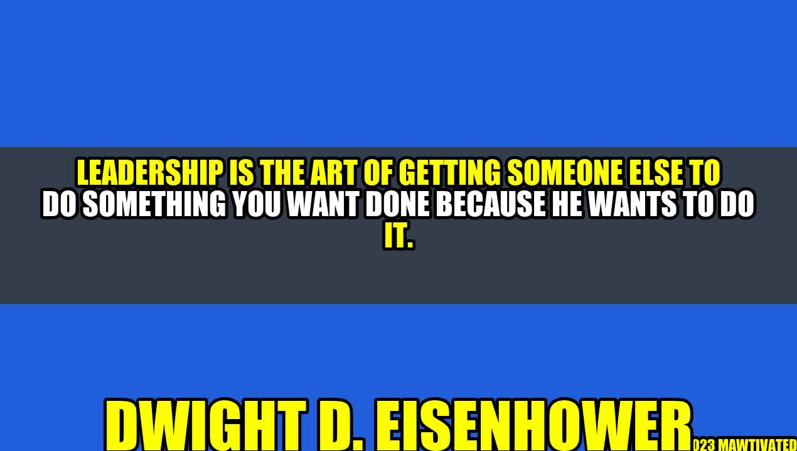

Leadership: The Art of Inspiring and Influencing Others

A young boy named Tom was walking down the street when he saw an old man struggling to carry a heavy bag. Without hesitation, Tom ran to the old man's aid and helped him carry the bag to his destination. The old man looked at Tom and said, "Son, you have the heart of a leader. Never lose that."
This story illustrates the essence of leadership. It's not about being in charge and ordering people around. It's about inspiring and influencing others to do something positive.
Who is Dwight D. Eisenhower?
Dwight D. Eisenhower, the 34th President of the United States, was a remarkable leader who exemplified the art of leadership. He was a five-star general in the Army and Supreme Commander of the Allied Forces in Europe during World War II. As a leader, he was known for his intelligence, integrity, and compassion.
Eisenhower once said, "Leadership is the art of getting someone else to do something you want done because he wants to do it." This quote summarizes what leadership is all about. A true leader is someone who inspires and motivates others to achieve a shared vision.
Examples of Leadership
Leadership can be seen in different contexts, from business to sports to politics. Here are a few examples of leaders who have demonstrated the art of leadership:
- Steve Jobs: The late co-founder of Apple was known for his innovation, vision, and attention to detail. He inspired his team to create products that were both functional and aesthetically pleasing.
- Nelson Mandela: The former President of South Africa was a symbol of hope and reconciliation. He inspired his countrymen to overcome their differences and work towards a common goal of peace and prosperity.
- LeBron James: The NBA superstar is not only a great basketball player, but also a leader who motivates his teammates to perform at their best. He leads by example, both on and off the court.
The Three Elements of Leadership
Leadership is not a one-size-fits-all concept. However, there are three elements that all effective leaders share:
- Clarity of vision: A leader must have a clear and compelling vision of what they want to achieve. They must communicate this vision to the team and inspire them to work towards it.
- Effective communication: A leader must be able to communicate their ideas and expectations clearly and concisely. They must listen to feedback and be open to new ideas.
- Empathy and emotional intelligence: A leader must be able to understand and relate to the emotions of their team members. They must be able to provide support and guidance when needed.
Practical Tips for Effective Leadership
If you want to be an effective leader, here are some tips to keep in mind:
- Lead by example: Your actions speak louder than words. If you want your team to be punctual, then be punctual yourself.
- Communicate clearly and concisely: Don't leave any room for misinterpretation. Make sure your team understands what you want them to do.
- Encourage feedback: Your team members are your greatest resource. Listen to their feedback and act on it.
- Be patient: Leadership takes time and effort. Don't expect overnight success. Stay committed to your vision and keep working towards it.
Conclusion
In conclusion, leadership is an art that can be learned and cultivated. It's not about dominating others, but rather inspiring and influencing them to do something positive. To be an effective leader, you need clarity of vision, effective communication skills, and emotional intelligence. Remember to lead by example, communicate clearly, encourage feedback, and be patient.
Hashtags
#leadership #inspiration #motivation #vision #communication #empathy #teamwork #success
SEO Keywords
Leadership, Inspiration, Motivation, Vision, Communication, Empathy
Category
Business, Success, Leadership
Curated by Team Akash.Mittal.Blog
Curated by Team Akash.Mittal.Blog
Share on Twitter Share on LinkedIn